金沢の文化と海の幸、
温泉を一度に楽しむ旅。
小松空港でレンタカーを受け取り、金沢市内へ。 兼六園、近江町市場、ひがし茶屋街をゆっくり巡り、 2泊目は加賀温泉郷へ移動します。 市内観光は駐車場を活用し、見学場所を絞って休憩を多めに取る構成です。
兼六園の庭園美、近江町市場の海鮮、ひがし茶屋街の町並み。 金沢らしい文化と甘味を楽しみ、最後は加賀温泉郷でゆっくり休む旅です。
小松空港でレンタカーを受け取り、金沢市内へ。 兼六園、近江町市場、ひがし茶屋街をゆっくり巡り、 2泊目は加賀温泉郷へ移動します。 市内観光は駐車場を活用し、見学場所を絞って休憩を多めに取る構成です。
庭園、海沿いの道、棚田、歴史ある町並みを楽しみます。
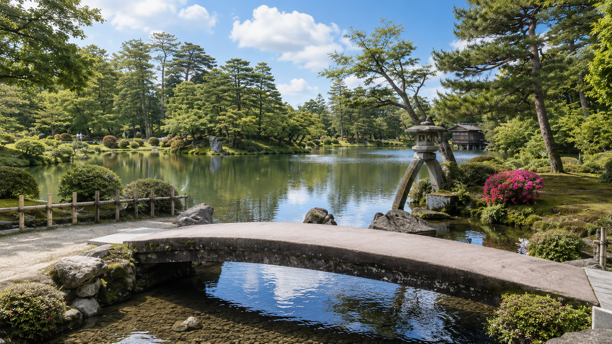
日本三名園のひとつ。霞ヶ池や徽軫灯籠など、代表的な見どころを中心に巡ります。
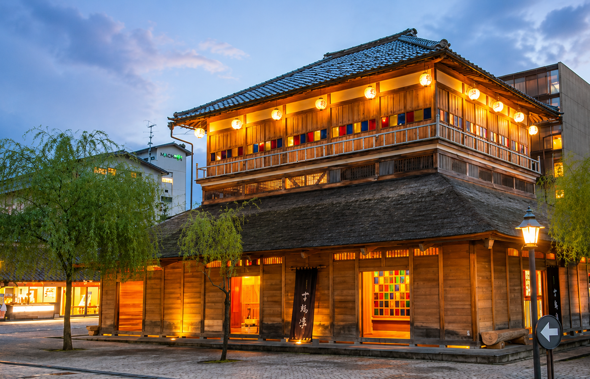
格子戸の町家が並ぶ金沢らしい風景。夕方の灯りも美しいエリアです。
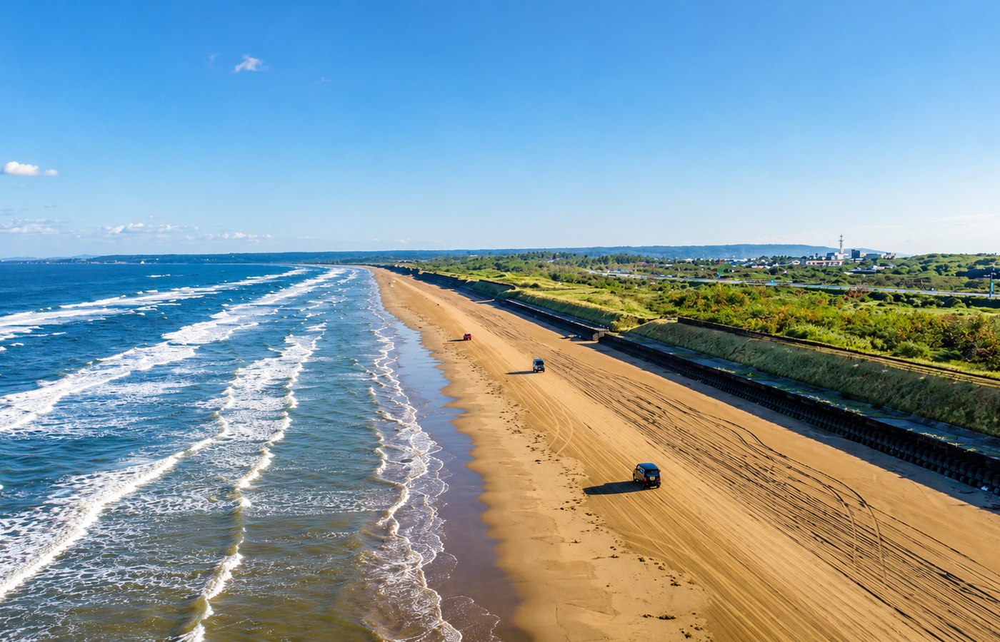
波打ち際を車で走れる、石川ならではの爽快なドライブスポットです。
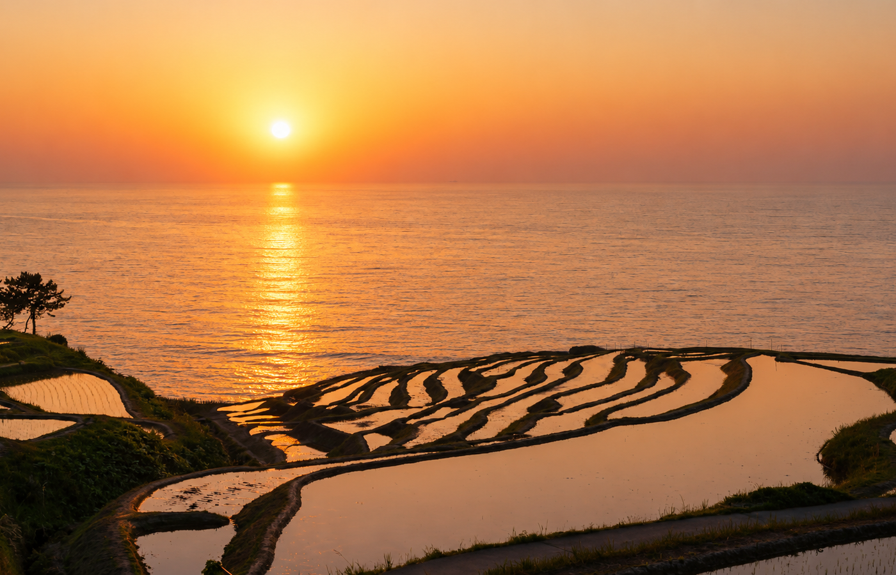
海へ続くように広がる棚田。夕日の時間帯には水面が黄金色に輝きます。
日本海の海鮮、金沢のB級グルメ、見た目も華やかな甘味まで。
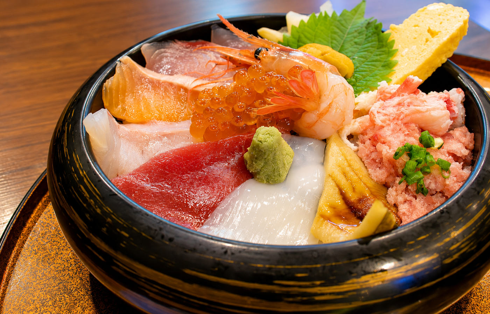
近江町市場などで、新鮮な魚介を一度に楽しめる石川旅の主役です。
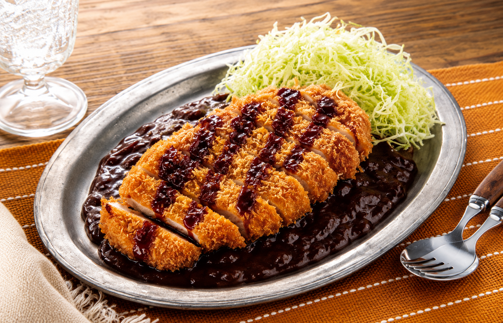
濃厚なルー、カツ、千切りキャベツを合わせた食べ応えのある名物。
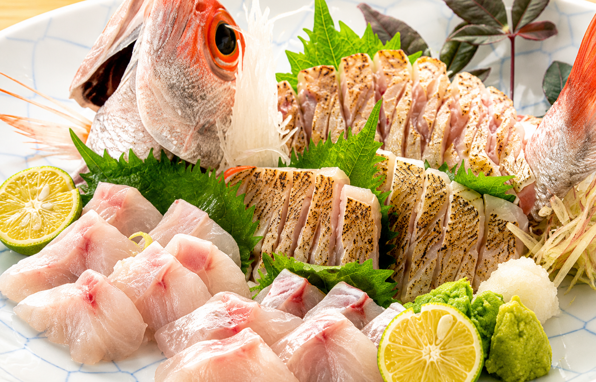
脂ののった白身を、刺身や炙り、焼き物で味わいたい石川のごちそうです。
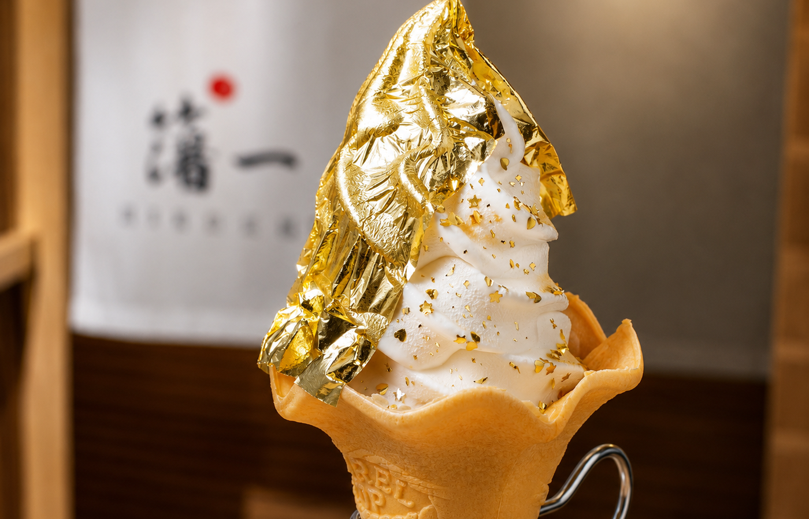
金沢らしい華やかさを楽しめる、写真映えする定番スイーツです。
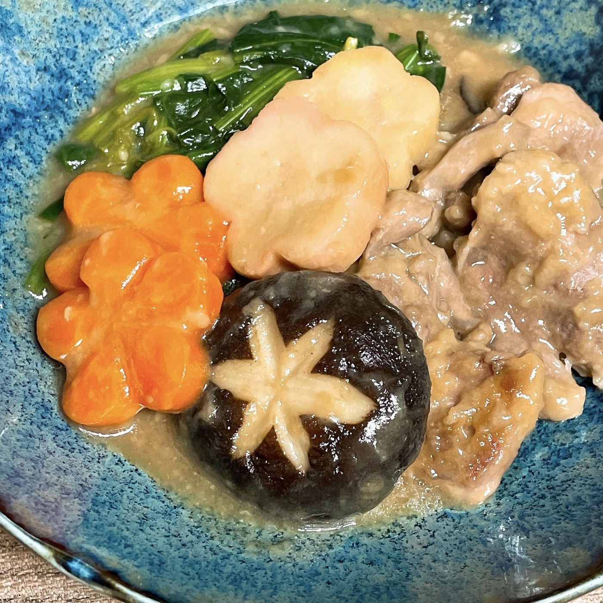
鴨肉や鶏肉、すだれ麩、野菜をとろみのあるだしで煮込む金沢の郷土料理です。
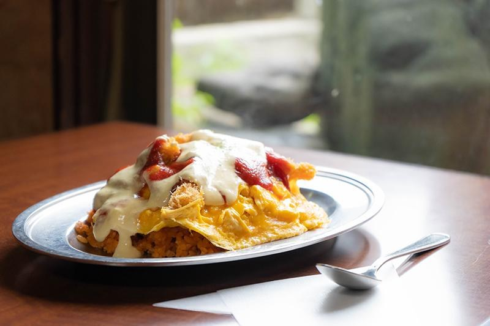
ケチャップライスに薄焼き卵と魚のフライをのせた、金沢生まれの名物洋食です。
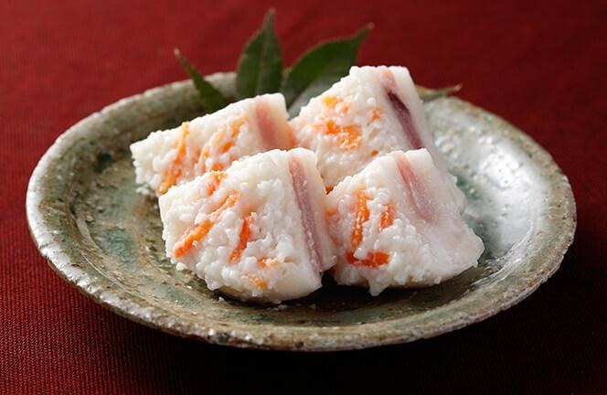
かぶにブリを挟み、米麹で漬け込んだ、冬の石川を代表する発酵食です。
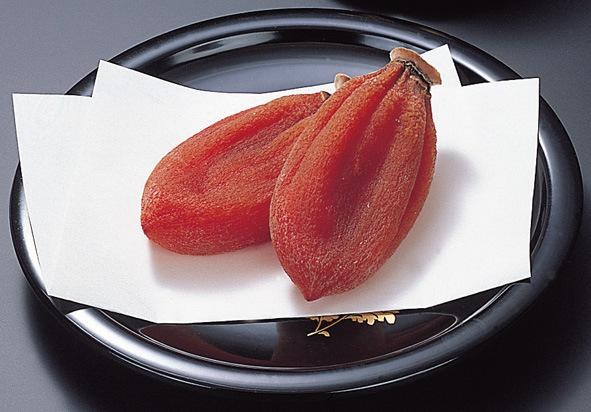
能登・志賀町などで作られる、濃厚な甘みと上品な食感が魅力の干し柿です。
4月中旬〜下旬は、桜の最盛期を過ぎる可能性がありますが、 兼六園では春の草木や新緑が楽しめます。 金沢市内は気温差が出やすいため、羽織れる上着を用意し、 雨天時は市場、茶屋建築、工芸施設を中心に組み替えます。
金沢市内は代表的な場所に絞ります。
小松空港でレンタカーを受け取り、金沢市内へ。近江町市場で遅めの昼食を取り、ホテルで休憩後、余裕があれば金沢駅周辺へ。
午前に兼六園を主要スポット中心に見学。昼食後はひがし茶屋街で町並みと甘味を楽しみ、夕方に加賀温泉郷へ移動します。
朝は宿でゆっくり過ごし、温泉街を短時間散策。昼食とお土産を済ませ、小松空港へ戻ります。
小松空港にはレンタカー案内所があり、複数会社の受付に対応しています。 空港から金沢駅方面までは車で約60分が公式案内の目安です。 加賀温泉郷は空港から比較的近く、最終日に組み込みやすい立地です。